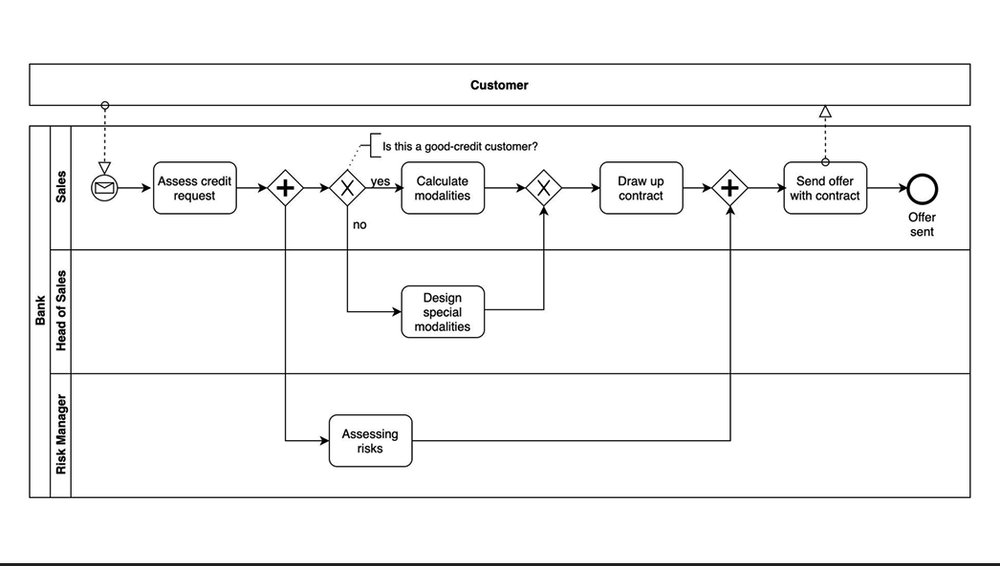

These diagrams were created a few years ago, before the adoption of Generative AI in my workflow. Today, I take a more advanced approach, leveraging prompt engineering best practices to generate diagrams efficiently using tools like Miro, Gemini 2.5 Pro, Claude, and ChatGPT.
Business Process Diagram (BPMN)
State Diagram

Retail shipment